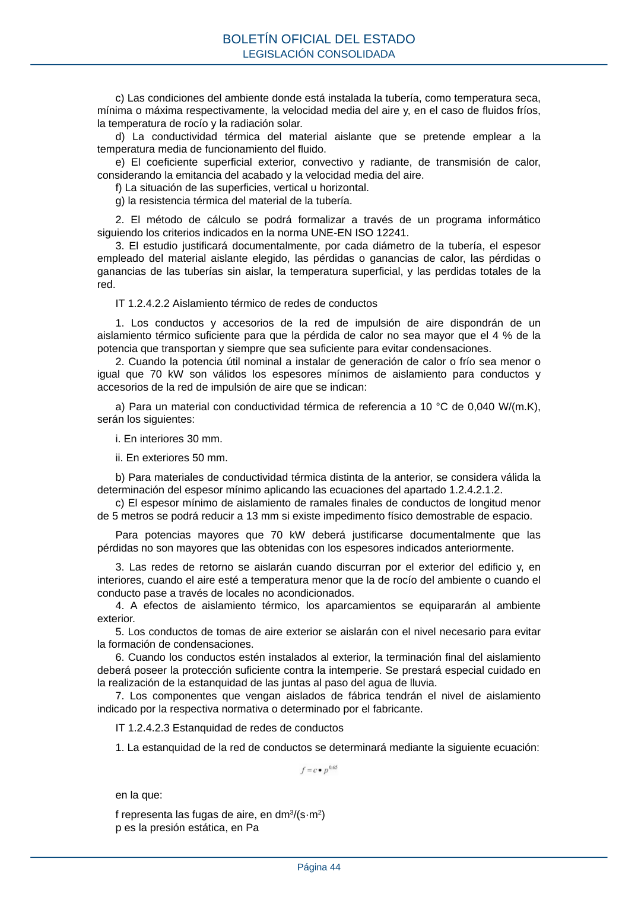

RITE · Página 44 · versión 2022-08-02
SHA256: ad1680c83bf4c7f5c656af1794c32ad0669ad9f36ac293737ff3f95177ff7b26 · página física 44 de 97 · métodos de encabezado
solo si están cotejados.
Formatos: Markdown · JSON de bloques · PDF p. 44 · imagen PNG
c) Las condiciones del ambiente donde está instalada la tubería, como temperatura seca, mínima o máxima respectivamente, la velocidad media del aire y, en el caso de fluidos fríos, la temperatura de rocío y la radiación solar. d) La conductividad térmica del material aislante que se pretende emplear a la temperatura media de funcionamiento del fluido. e) El coeficiente superficial exterior, convectivo y radiante, de transmisión de calor, considerando la emitancia del acabado y la velocidad media del aire. f) La situación de las superficies, vertical u horizontal. g) la resistencia térmica del material de la tubería. 2. El método de cálculo se podrá formalizar a través de un programa informático siguiendo los criterios indicados en la norma UNE-EN ISO 12241. 3. El estudio justificará documentalmente, por cada diámetro de la tubería, el espesor empleado del material aislante elegido, las pérdidas o ganancias de calor, las pérdidas o ganancias de las tuberías sin aislar, la temperatura superficial, y las perdidas totales de la red. IT 1.2.4.2.2 Aislamiento térmico de redes de conductos 1. Los conductos y accesorios de la red de impulsión de aire dispondrán de un aislamiento térmico suficiente para que la pérdida de calor no sea mayor que el 4 % de la potencia que transportan y siempre que sea suficiente para evitar condensaciones. 2. Cuando la potencia útil nominal a instalar de generación de calor o frío sea menor o igual que 70 kW son válidos los espesores mínimos de aislamiento para conductos y accesorios de la red de impulsión de aire que se indican: a) Para un material con conductividad térmica de referencia a 10 °C de 0,040 W/(m.K), serán los siguientes: i. En interiores 30 mm. ii. En exteriores 50 mm. b) Para materiales de conductividad térmica distinta de la anterior, se considera válida la determinación del espesor mínimo aplicando las ecuaciones del apartado 1.2.4.2.1.2. c) El espesor mínimo de aislamiento de ramales finales de conductos de longitud menor de 5 metros se podrá reducir a 13 mm si existe impedimento físico demostrable de espacio. Para potencias mayores que 70 kW deberá justificarse documentalmente que las pérdidas no son mayores que las obtenidas con los espesores indicados anteriormente. 3. Las redes de retorno se aislarán cuando discurran por el exterior del edificio y, en interiores, cuando el aire esté a temperatura menor que la de rocío del ambiente o cuando el conducto pase a través de locales no acondicionados. 4. A efectos de aislamiento térmico, los aparcamientos se equipararán al ambiente exterior. 5. Los conductos de tomas de aire exterior se aislarán con el nivel necesario para evitar la formación de condensaciones. 6. Cuando los conductos estén instalados al exterior, la terminación final del aislamiento deberá poseer la protección suficiente contra la intemperie. Se prestará especial cuidado en la realización de la estanquidad de las juntas al paso del agua de lluvia. 7. Los componentes que vengan aislados de fábrica tendrán el nivel de aislamiento indicado por la respectiva normativa o determinado por el fabricante. IT 1.2.4.2.3 Estanquidad de redes de conductos 1. La estanquidad de la red de conductos se determinará mediante la siguiente ecuación: en la que: f representa las fugas de aire, en dm3/(s·m2) p es la presión estática, en Pa BOLETÍN OFICIAL DEL ESTADO LEGISLACIÓN CONSOLIDADA Página 44
